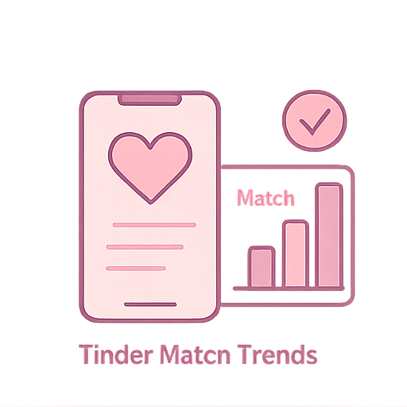

Joey's Project Gallery
üè• Abbott Biowearables Strategy
Overview: This project is a case study on how Abbott’s biowearables — particularly the FreeStyle Libre™ portfolio, Lingo™, and Libre Rio™ — are transforming diabetes management and overall health monitoring. It focuses on how these technologies create value by improving patient outcomes, enhancing patient experience, and lowering healthcare costs, while expanding the market for digital health solutions.
Tools: PowerPoint, Excel, Canva
Result: This case study demonstrates that Abbott’s continuous glucose monitoring (CGM) solutions — FreeStyle Libre™, Lingo™, and Libre Rio™ — drive measurable healthcare impact by reducing hypoglycemia events by 43%, lowering HbA1c by 0.9%, cutting hospitalization rates by 66%, and saving up to $8,500 in annual healthcare costs per user. The findings support CGMs as critical tools for building a proactive, data-driven healthcare ecosystem beyond traditional diabetes management.

üìä Tinder: Dating App Dynamics
Overview: In this project, we explored gender dynamics on dating apps like Tinder to answer the question: Who's winning and losing in the Dating App Olympics? Using publicly available datasets, we analyzed metrics like match rates, like-to-match conversions, and relationship outcomes across genders. Statistical methods including hypothesis testing, Z-tests, and regression models were applied. Visualizations were created with Tableau to clearly illustrate key patterns and differences.
Tools: Python (t-tests, ANOVA), Tableau
Result: Women had a much higher likes-to-match success rate (34.22%) compared to men (9.4%), a statistically significant difference showing greater selectivity and efficiency. Men slightly outperformed women in converting matches to dates (11.59% vs. 6.92%), but the difference was not statistically significant. Similarly, women were more successful at turning dates into relationships (11.42% vs. 5.33%), though again not at a significant level. Men were more likely to seek casual relationships, while women more often pursued serious ones. Finally, linking an Instagram account significantly improved match rates, while the number of profile pictures had little effect.

üíÑ Skincare Recommendation Engine
Overview: This project addressed two key challenges in the cosmetics industry: predicting the suitability of cosmetic products for different skin types and recommending products based on consumer price and ranking preferences. Using a Kaggle cosmetics dataset containing detailed information on price, brand, ingredients, and product suitability, we applied data cleaning, preprocessing, and feature engineering techniques to prepare the data. A Random Forest model was developed to classify products according to skin types including Combination, Dry, Normal, Oily, and Sensitive. In parallel, K-Means clustering was used to group products by price and rank to build a recommendation system. This project demonstrates how machine learning can streamline product selection for consumers while providing valuable market insights to brands.
Tools: Python, Clustering, Random Forest, Feature Engineering
Result: The Random Forest model achieved strong classification performance, with accuracy rates ranging from 65.61% for Sensitive skin to 71.49% for Normal skin. F1 scores across skin types ranged from 0.65 to 0.70, indicating consistent and balanced model performance despite some class imbalances. The confusion matrix showed that the model correctly classified 138 instances while providing insights into areas needing further refinement. For the recommendation system, K-Means clustering successfully segmented products into distinct groups based on price and rank, allowing personalized product suggestions aligned with consumer budgets. The clustering visualizations highlighted clear groupings, enhancing the interpretability of the recommendations. Overall, the project illustrated the effectiveness of machine learning models in simplifying skincare product selection and highlighted opportunities for future improvements by integrating additional product attributes and advanced recommendation techniques.

✈️ Sun Country Airlines Customer Segmentation
Overview: This project focused on analyzing customer behavior for Sun Country Airlines using clustering techniques. We worked with a dataset containing 15,144 rows and 90 columns of customer information, aiming to identify meaningful customer segments that could inform marketing and strategic initiatives. After performing data cleaning, normalization, and scaling, we applied K-Means clustering and determined five distinct customer segments based on booking behaviors, revenue contributions, and seasonal travel patterns. The goal was to provide Sun Country Airlines with actionable insights to better target their customers through segmentation, personalized marketing campaigns, and strategic decision-making based on data.
Tools: Python, K-Means, Power BI, Survey Data
Result: The clustering analysis revealed five customer segments: Practical Planners, Loyal Executives, Occasional Travelers, Leisure Flyers, and Last-Minute Lux Travelers. Practical Planners were identified as cost-sensitive customers who book early and favor economical options, while Loyal Executives consisted largely of business travelers with higher first-class usage and substantial revenue contributions. Occasional Travelers typically booked closer to departure and traveled mainly during the fourth quarter, aligning with holiday periods. Leisure Flyers exhibited larger group sizes and focused more on family or leisure trips, while Last-Minute Lux Travelers showed a preference for spontaneous, premium-class travel during holidays. Revenue analysis indicated that Occasional Travelers contributed the most total revenue, followed by Practical Planners and Leisure Flyers. Through visualizations and segment profiling, the project provided strategic recommendations for Sun Country Airlines to tailor offers, loyalty programs, and communications to better engage each customer segment, enhance customer retention, and increase profitability.

üìâ Netflix Pricing Strategy & Retention Plan
Overview: This project examined the marketing challenges faced by Netflix, focusing particularly on customer retention issues caused by frequent price increases and heightened competition in the streaming market. After conducting a comprehensive marketing situation analysis, including a SWOT assessment, the project identified Netflix's pricing strategy as a critical issue driving subscriber churn. To address this, we evaluated three strategic solutions: customer segmentation with tiered pricing, enhanced transparent communication with customers, and the implementation of loyalty programs. Using evaluation criteria such as revenue growth potential, customer retention, market expansion, implementation feasibility, and brand impact, customer segmentation and tiered pricing emerged as the recommended solution. An action plan was developed outlining research, tiered pricing model development, technical infrastructure building, pilot testing, full-scale rollout, and continuous optimization to guide Netflix’s strategic response.
Tools: SWOT, Evaluation Matrix, Pricing Frameworks, Strategic Planning
Key Insight: Price sensitivity and value mismatch were core causes of churn. Customer perception shifted from “premium” to “overpriced.”
Result: The proposed tiered pricing strategy offers differentiated subscription plans tailored to budget-conscious users, premium users, light viewers, and regional markets. This approach is expected to increase Netflix's revenue by 10–15% annually and expand market share in emerging regions by up to 20%, while simultaneously improving customer retention through greater price flexibility and targeted value propositions. The Random Forest model applied for customer segmentation and pricing recommendations is backed by detailed action steps, including research, pilot programs, and a full-scale launch. Transparent communication and loyalty programs were also found valuable for supplementary brand strengthening but were not as effective as tiered pricing in addressing revenue growth and customer churn comprehensively. By implementing customer segmentation and tiered pricing, Netflix can reinforce its competitive positioning, enhance customer satisfaction, and achieve sustainable growth in the evolving streaming landscape.

üç¶ Ice Cream Consumer Sentiment
Overview: This project explored consumer preferences in the ice cream market by analyzing 21,674 online reviews from four major brands: Ben & Jerry’s, Häagen-Dazs, Breyers, and Talenti. Using a structured dataset that combined product characteristics with review sentiment, the study aimed to understand which factors contribute to flavor popularity, how ingredients impact sentiment and ratings, and whether a flavor’s success can be predicted based on its ingredients. The project involved extensive data cleaning, text preprocessing, sentiment classification, ingredient analysis, and predictive modeling using machine learning algorithms. The goal was to uncover actionable insights that ice cream companies could use to optimize flavor offerings, improve marketing strategies, and align products more closely with consumer preferences.
Tools: Python, TF-IDF, Sentiment Analysis, Random Forest Classifier
Key Insight: Consumers crave indulgence — caramel, chocolate, and almonds drove 5-star reviews, while artificial stabilizers triggered long, negative rants. Negative reviews were 2x longer on average, highlighting emotional dissatisfaction.
Result: The analysis revealed that rich, indulgent ingredients such as caramel, chocolate, and almonds were closely associated with positive consumer sentiment and higher flavor ratings, while stabilizers and artificial additives like pectin and whey were more common in unpopular flavors. Sentiment analysis showed that approximately 80% of all reviews were positive, with Ben & Jerry’s receiving the highest proportion of favorable feedback. Popular flavors often include natural ingredients and non-dairy options, aligning with broader food trends. Predictive modeling using Random Forest achieved an accuracy of 81.25% in forecasting flavor success based on ingredient composition, outperforming Logistic Regression, XGBoost, and Support Vector Machine models. Key predictors included the presence of chocolate chips, vanilla, and almonds. These findings demonstrate the strong influence of ingredient quality on consumer satisfaction and provide valuable guidance for brands seeking to improve their product offerings and marketing strategies.

← Back to Home